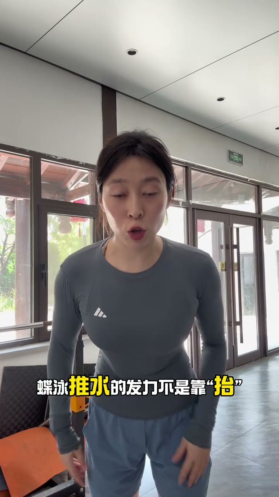
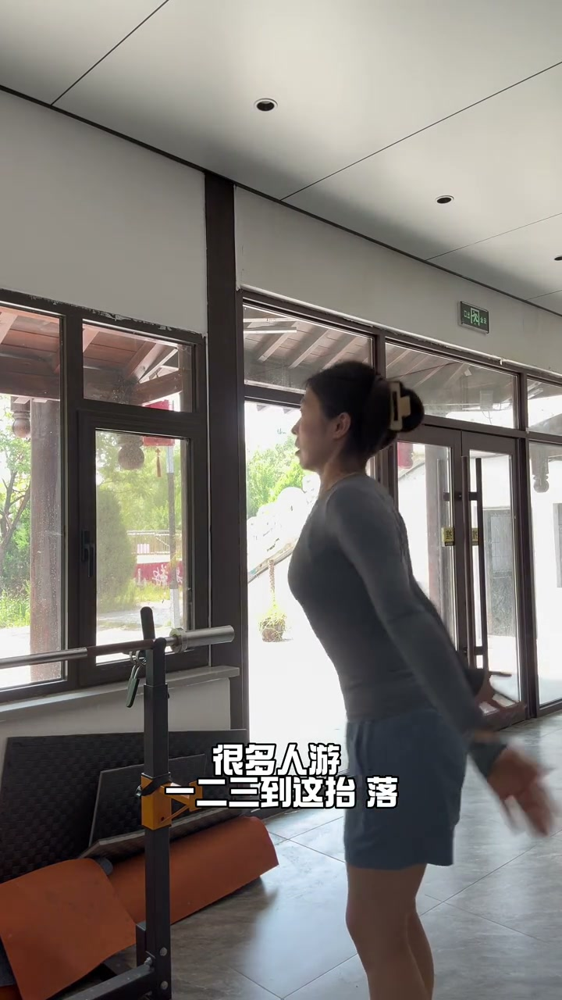
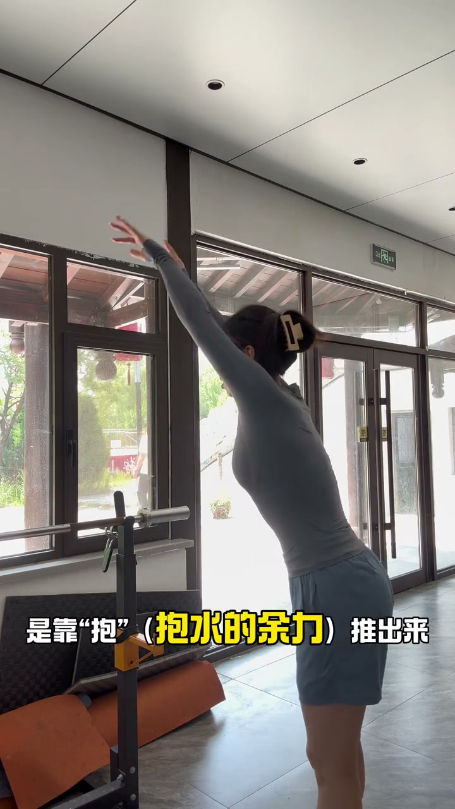
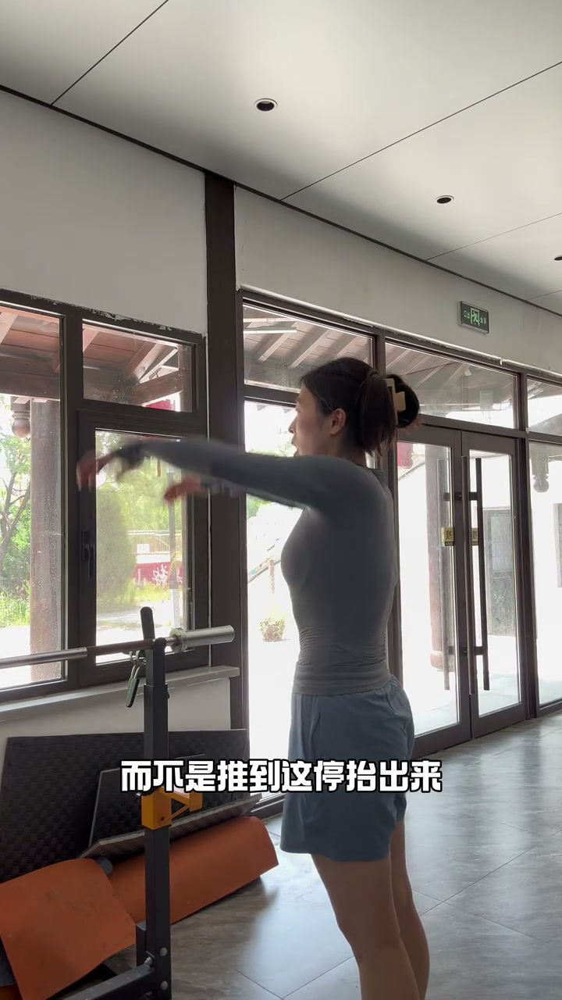
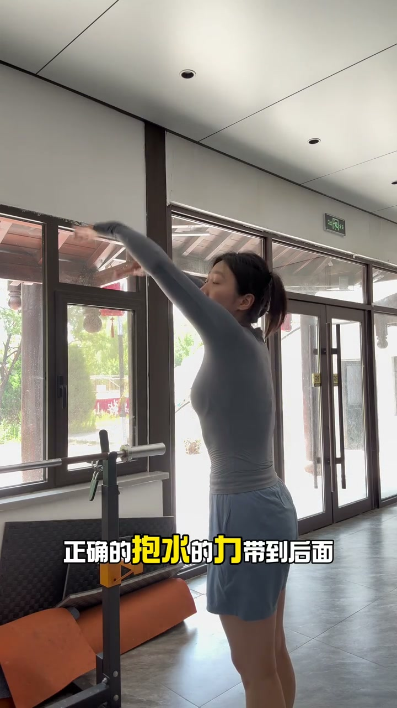

为什么起不来：发力靠“抬”
00:00看看蝶泳为什么手推不出来。
00:02蝶泳推水的发力不是靠抬。
00:06很多人由一二三到这儿，然后抬、落——力量在身体下方就断掉了，你当然起不来。

[00:03] 蝶泳推水：手推不出来
Butterfly pull: the hands can't push through

[00:07] 错误：一二三到这儿，抬、落
Wrong: one-two-three to here, lift, drop
正确发力：抛推出来
00:12蝶泳的推水是靠抛、推出来——力量是“抛”出去的连贯动作。
00:15而不是推到这儿停、抬出来。

[00:12] 正确：抛、推出来，力量连贯
Right: toss and push out, with continuous power

[00:16] 错误对比：推到这儿停再抬
Wrong comparison: stopping mid-push then lifting
抱水的力带到后面
00:19我们再看一遍正确的：抱水的力带到后面，推出来。
00:25而不是抱水的力停，然后抬起来——力量保持连贯，身体自然被带出水面。

[00:21] 抱水的力带到后面，顺势推出来
Carry the catch's force backward and let it flow into the push
蝶泳推水的核心是连贯：抱水的力不停在身下，抛推出来——靠抛不靠抬，身体自然起水。